Een ontwerp is een reflectie van zijn functie in zijn omgeving.
Ik ben Jurgen Baetens, architect. Ik teken strak, met natuurlijke materialen en een fijne detaillering. Waar valt het licht binnen, hoe opent het huis naar buiten, wat kan het budget dragen? Daar begint elk ontwerp.
Op acht meter van het spoor.
Mijn eigen woning staat aan de noordkant van het perceel, vlak langs de spoorlijn Leuven naar Hasselt. Een moeilijke plek, en net daarom een goed voorbeeld van hoe ik werk.
De noordzijde en het dak zijn ingegraven en dragen een intensief groendak. Dat houdt het lawaai van de treinen tegen en buffert de warmte. De rest is één open loft. Eén lange kast deelt de ruimte in: berging, badkamer, keuken en nachthal zitten erachter.
Een droge stapelmuur splitst het terrein in een publiek en een privé deel. Door de grote glazen gevel valt de grens tussen binnen en buiten bijna weg.
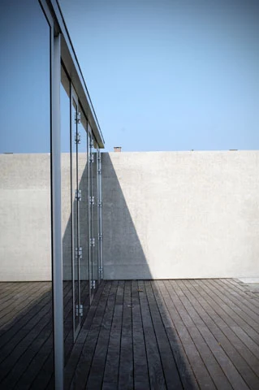
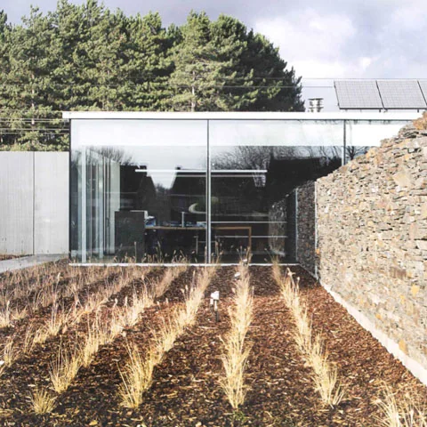
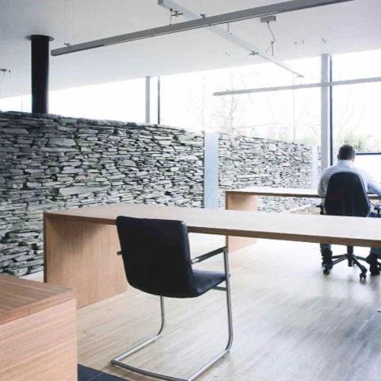
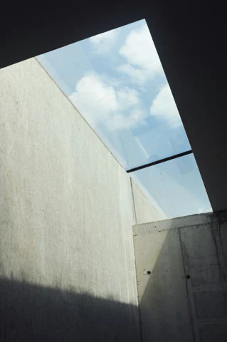
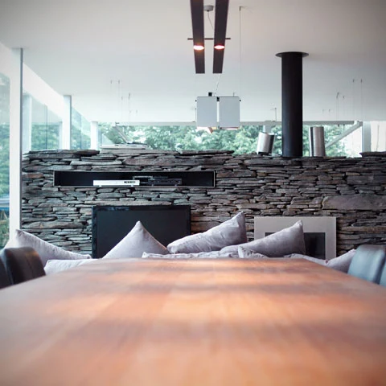
Elke plek vraagt een eigen antwoord.
Een gedraaide aanbouw om naar drie notenbomen te kijken, een verdieping erbovenop terwijl het gezin bleef wonen. Klik op een project voor het verhaal en de beelden.
Voor een landschapsarchitect en steenkunstenaar werd de vervallen aanbouw van een oude herenboerderij gesloopt. In de plaats kwam een volume in glas, een kwartslag gedraaid. Zo kijkt de woning nu panoramisch uit over de tuin met zijn drie notenbomen.
De nieuwe voorgevel in gezaagde blauwe hardsteen loopt dwars door de woning. Ze geeft privacy naar de straat en opent nieuwe zichtlijnen binnen.
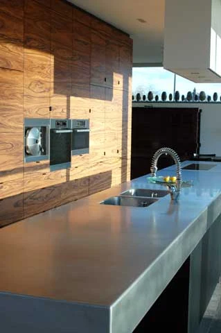
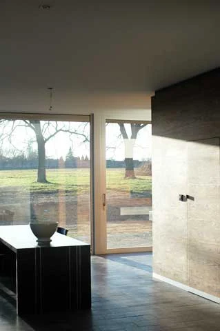
Bovenop de bestaande woning kwam een nieuwe leefruimte, een bureau en een slaapkamer met dressing en badkamer voor de ouders.
De verbinding tussen oud en nieuw werd pas op het einde gemaakt, zodat het gezin tijdens de werken gewoon kon blijven wonen. Wat van het dak overbleef, werd een dakterras met zicht rondom.
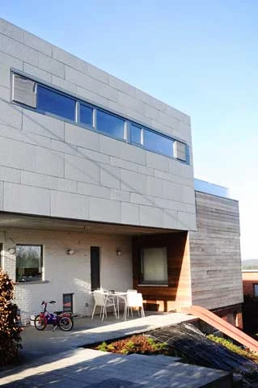
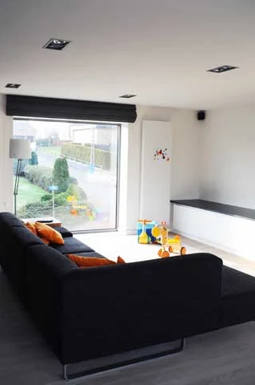
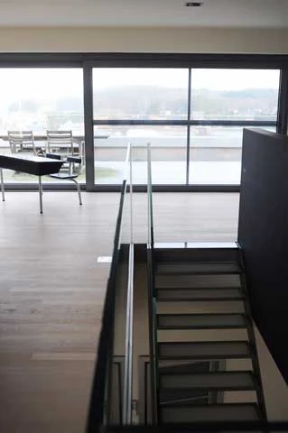
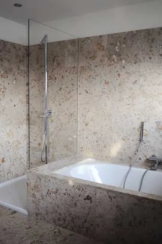
Een woning in het centrum van Aarschot. De garage moest blijven en de voorschriften lieten geen uitbreiding op het gelijkvloers toe.
Daarom werd het wonen over twee verdiepingen verdeeld en verhuisde de trap, zodat beide niveaus rechtstreeks verbonden zijn. Beneden keuken en eetplaats, boven een rustige zithoek en het slaapgedeelte.
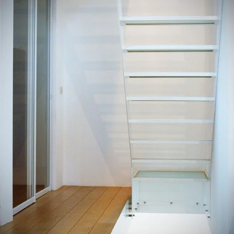
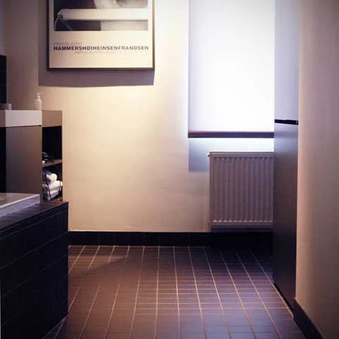
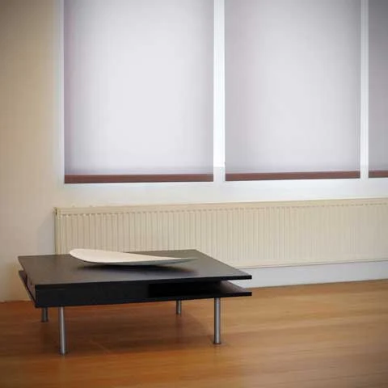
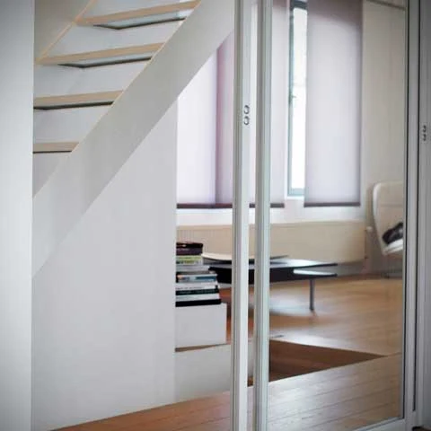
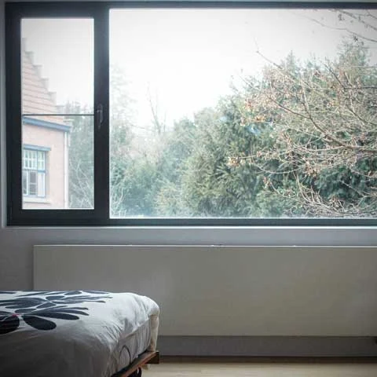
De bestaande woning werd geïsoleerd en ingepakt in zink met staande naad. De nieuwe aanbouw in hout en glas heeft ramen naar de zon en ramen naar het uitzicht.
Bovenop kwam een gesloten volume in gevelsteen voor de slaapkamers. Omdat dat volume uitkraagt, ontstond eronder een overdekt terras.
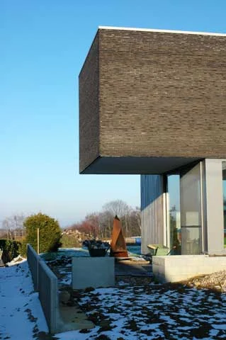
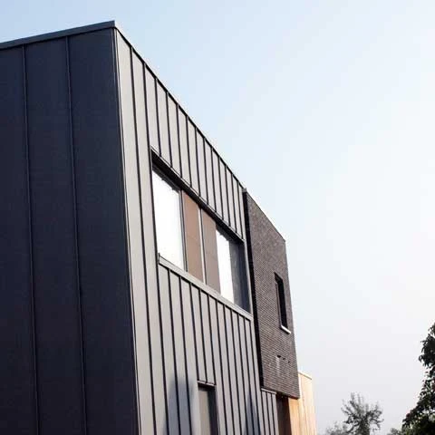
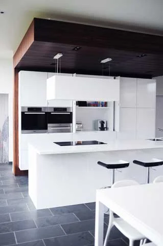
De hele woning kreeg een nieuwe gevelsteen, zodat alle gevels geïsoleerd konden worden. Het hellende dak maakte plaats voor een plat dak.
Op de zuidwestgevel kwam een groot raam met een glazen vloer erachter. Zo valt de zon tot in bijna elke kamer. Samen met de compacte vorm werd het een heel zuinige woning.
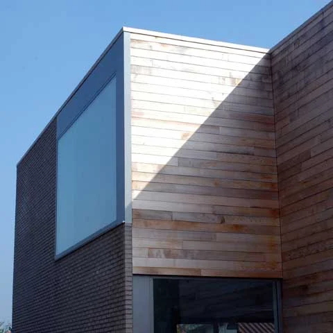
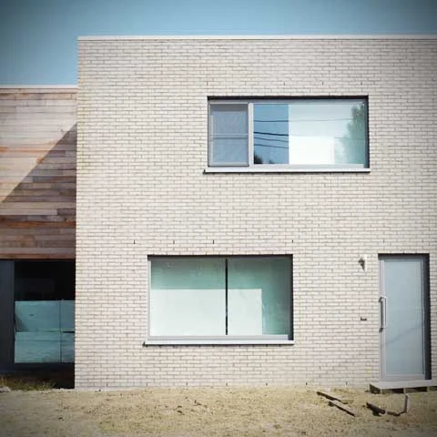
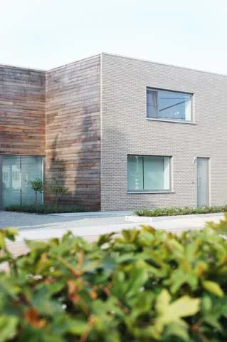
Een hoger, meer gesloten volume met alle natte ruimtes, en een leefvolume met leefruimte, bureau en slaapkamers.
Omdat het zuiden aan de straatkant ligt, werd uit het leefvolume een stuk weggesneden. Zo ontstond vooraan een eigen tuinzone, met de ramen erbij.
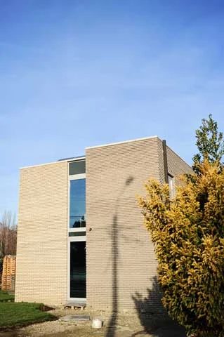
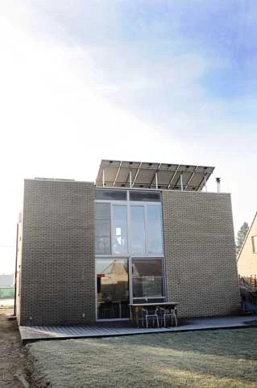
Een nieuwbouw met een kapsalon en een schoonheidssalon. Tussen beide zit een gedeelde berging in matglas, die het licht diep in het gebouw brengt. Ook de inkom en de toiletten worden gedeeld.
De verdiepingen werden casco afgewerkt, om later in te richten als appartement.
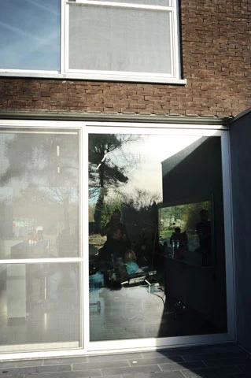
Een gebouw dat toont wie u bent.
Een nieuw bedrijfsgebouw teken ik rond hoe uw bedrijf werkt. In nauw overleg kijken we naar de indeling, het energieverbruik en de materialen, zodat het gebouw ook iets zegt over uw zaak.
- 1Indeling op maat van uw werking
- 2Energie en materialen samen afgewogen
- 3De beste verhouding tussen prijs en kwaliteit
- 4Opvolging tot in de laatste details, als u dat wil
Licht, buiten, materiaal. En uw budget.
Een minimalistische vormgeving, natuurlijke materialen en een fijne detaillering. Altijd binnen het budget van de bouwheer, en met een sterke zin voor energiezuinig bouwen.
Ramen op de plek waar de zon binnenvalt, en een indeling die daarop volgt.
De tuin hoort bij het huis. Zichtlijnen naar buiten bepalen mee het plan.
Steen, hout, zink en glas, fijn gedetailleerd zodat ze mooi verouderen.
Compact bouwen en goed isoleren. Zuinig in gebruik, ook op lange termijn.
Bouwplannen? Vertel het me.
Een perceel, een woning die moet veranderen of een bedrijfsgebouw. U spreekt meteen met mij, van het eerste gesprek tot op de werf.